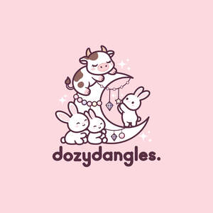

Trade Mark Journal No.2026/012 20 March 2026
UK00004348120 2 March 2026 (14,26,28)

- Class 14
- Crochet earrings; crochet bracelets; crochet necklaces; beaded crochet jewellery ; Bead necklaces; bead earrings; bead anklets; Keyrings; Lanyards for keys; Retractable key rings [trinkets or fobs]; Key charms [trinkets or fobs]; Key rings [trinkets or fobs]; Key chains [split rings with trinket or decorative fob]; Fobs for keys; Key chains as jewellery [trinkets or fobs]; Key holders [trinkets or fobs]; Key tags [trinkets or fobs]; Key rings [trinkets or fobs] of precious metal; Key chains [trinkets or fobs]; Necklace charms; Bracelet charms; Metal key fobs; Silver-plated bracelets; Silver-plated necklaces; Wristlet watches; Keyrings of common metal; Silver-plated earrings; Key fobs; Key fobs [rings] coated with precious metal; Scarf clips being jewelry; Clip earrings; Wristlets [jewellery]; Pendant watches; Jewelry clips for adapting pierced earrings to clip-on earrings; Identification bracelets of precious metal [jewelry]; Jewelry hat pins; Identification bracelets [jewelry]; Gold-plated necklaces; Key fobs, not of metal; Jewellery chain of precious metal for bracelets; Jewellery rope chain for bracelets; Jewellery rope chain for necklaces; Plastic bracelets in the nature of jewelry; Jewellery chain of precious metal for necklaces; Key chains for use as jewelry; Bangle bracelets; Charms for key chains; Gold-plated earrings; Jewelry charms; Key rings and key chains, and charms therefor; Choker necklaces; Bib necklaces; Jewellery hat pins; Fancy keyrings of precious metals; Jewel pendants; Hat ornaments of precious metal; Ornaments (Hat -) of precious metal; Hat jewelry; Silver bracelets; Watch fobs; Silver necklaces; Key chain tags; Rings [trinket]; Silver earrings; Lapel pins [jewellery]; Lapel badges of precious metal; Retractable key rings; Earrings; Pendants for watch chains; Amber pendants being jewellery; Jewellery brooches; Jewellery, including imitation jewellery and plastic jewellery; Pendants [jewellery]; Brooches [jewellery, jewelry (Am.)]; Amulets being jewellery; Necklaces [jewellery, jewelry (Am.)]; Jewelry; Fashion jewellery; Lockets [jewellery]; Gold jewellery; Jade [jewellery]; Jewelry brooches; Brooches being jewelry; Clasps for jewellery; Charms for jewellery; Jewellery charms; Enamelled jewellery; Pearls [jewellery, jewelry (Am.)]; Ornaments [jewellery, jewelry (Am.)]; Items of jewellery; Jewellery items; Costume jewellery; Decorative brooches [jewellery]; Trinkets [jewellery, jewelry (Am.)]; Rings being jewellery; Rings [jewellery]; Amulets [jewellery, jewelry (Am.)]; Bracelets [jewellery, jewelry (Am.)]; Pewter jewellery; Jewellery stones; Jewellery products; Precious jewellery; Shoe jewellery; Jewellery chains; Jewellery caskets; Jewellery chain; Jewellery boxes; Jewellery for personal adornment; Imitation jewellery; Beads for making jewellery; Body jewellery; Jewellery in non-precious metals; Silver thread [jewellery, jewelry (Am.)]; Jewellery for pets; Personal jewellery; Facial jewellery; Jewellery incorporating pearls; Articles of jewellery; Jewellery chain of precious metal for anklets; Dress ornaments in the nature of jewellery; Jewellery of precious metals; Jewellery for personal wear; Jewellery cases; Jewelry hatpins; Bead bracelets; Jewellery in the form of beads; Gold necklaces; Cabochons for making jewelry; Rhinestones for making jewelry; Bracelets made of embroidered textile [jewellery]; Gold bracelets; Gold plated brooches [jewellery]; Decorative pins [jewellery]; Agate as jewellery; Ornaments, made of or coated with precious or semi-precious metals or stones, or imitations thereof; Gold plated bracelets; Clips of silver [jewellery]; Pins being jewellery; Jewellery rope chain for anklets; Hoop earrings; Closures for necklaces; Charms [jewellery, jewelry (Am.)]; Jewelry charms in precious metals or coated therewith; Necklaces of precious metal; Pins [jewellery, jewelry (Am.)]; Jewelry chains; Gold earrings; Medallions [jewellery, jewelry (Am.)]; Imitation jewellery ornaments; Jewellery fashioned of semi-precious stones; Statues and figurines, made of or coated with precious or semi-precious metals or stones, or imitations thereof.
- Class 26
- Beads for handicraft work; Beads other than for making jewelry [haberdashery]; Charms [not jewellery or for keys, rings or chains]; Charms, other than for jewellery, key rings or key chains; Lanyard cords for clothing; Rubber or silicone charm accessory for shoes; Scarf clips not being jewelry; Hat pins, other than jewellery; Lanyards for wear; Glass beads, other than for making jewelry; Beads, other than for making jewellery; Ceramic beads, other than for making jewelry; Beads for trimming; Pins, other than jewellery [jewelry (Am.)].
- Class 28
- Amigurumi; stuffed crochet animals; crochet dolls.
Karen Lim Tzia Wei